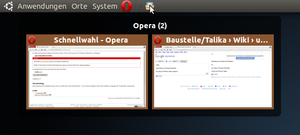
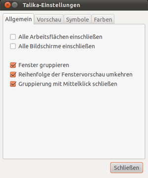

Talika
Archivierte Anleitung
Dieser Artikel wurde archiviert, da er - oder Teile daraus - nur noch unter einer älteren Ubuntu-Version nutzbar ist. Diese Anleitung wird vom Wiki-Team weder auf Richtigkeit überprüft noch anderweitig gepflegt. Zusätzlich wurde der Artikel für weitere Änderungen gesperrt.
Anmerkung: Das Programm ist nur für GNOME 2 gedacht, das nicht mehr Bestandteil der offiziellen Paketquellen ist.
Zum Verständnis dieses Artikels sind folgende Seiten hilfreich:
Talika  ist ein Applet für das GNOME Panel, das wie bei der Taskbar von Windows 7 die Liste der geöffneten Fenster über Programmsymbole darstellt, gruppiert und verwaltet. Es stellt aber keinen Klon dar, denn Talika entstand schon im Januar 2008. Die Ähnlichkeit beruht auf Vorschlägen von Talika-Benutzern, die sich diese Funktionen gewünscht hatten.
ist ein Applet für das GNOME Panel, das wie bei der Taskbar von Windows 7 die Liste der geöffneten Fenster über Programmsymbole darstellt, gruppiert und verwaltet. Es stellt aber keinen Klon dar, denn Talika entstand schon im Januar 2008. Die Ähnlichkeit beruht auf Vorschlägen von Talika-Benutzern, die sich diese Funktionen gewünscht hatten.
Nur auf den ersten Blick sieht Talika wie ein weiterer Programmstarter im Panel aus. Erst wenn man mit der Maus über dem Programmsymbol verharrt, wird der Unterschied sichtbar.
|  |
| Talika |
Installation¶
Talika ist nicht in den offiziellen Paketquellen enthalten. Man kann aber ein "Personal Package Archiv" (PPA) [1] benutzen.
PPA¶
Adresszeile zum Hinzufügen des PPAs:
ppa:webupd8team/talika
Hinweis!
Zusätzliche Fremdquellen können das System gefährden.
Ein PPA unterstützt nicht zwangsläufig alle Ubuntu-Versionen. Weitere Informationen sind der  PPA-Beschreibung des Eigentümers/Teams webupd8team zu entnehmen.
PPA-Beschreibung des Eigentümers/Teams webupd8team zu entnehmen.
Damit Pakete aus dem PPA genutzt werden können, müssen die Paketquellen neu eingelesen werden.
Nach dem Aktualisieren der Paketquellen kann das Programm über das folgende Paket installiert [2] werden:
talika (ppa)
 mit apturl
mit apturl
Paketliste zum Kopieren:
sudo apt-get install talika
sudo aptitude install talika
Fremdpaket¶
Alternativ kann man auch ein Fremdpaket  manuell herunterladen und installieren [3].
manuell herunterladen und installieren [3].
|  |
| Einstellungen |
Verwendung¶
Nach Abschluss der Installation kann man nun Talika über "Panel  -> Zum Panel hinzufügen" dem Panel anheften und gegen die "Fensterliste" eintauschen. Mit der Standardeinstellung werden jetzt alle geöffnete Fenster mit ihren Symbolen im Panel erscheinen.
-> Zum Panel hinzufügen" dem Panel anheften und gegen die "Fensterliste" eintauschen. Mit der Standardeinstellung werden jetzt alle geöffnete Fenster mit ihren Symbolen im Panel erscheinen.
Einstellungen¶
Talika kann über das Programmlogo im Benachrichtigungsfeld mit " -> Einstellungen" konfiguriert werden.
Kategorien:
"Allgemein": Regelt das allgemeine Verhalten von Talika
"Vorschau": Einstellungen für das Gruppieren von Programmfenstern
"Symbole": Darstellung der Symbole einstellen
"Farben": Farben für z.B. die Vorschau einstellen
Programmstarter¶
Man kann auch die momentan laufenden Programme dauerhaft in Talika integrieren. Dafür macht man einen Rechtsklick auf das entsprechende Programm in der Talikaleiste und wählt im Dropdown-Menü den ersten Punkt "Anheften" aus. Um es wider zu lösen wählt man bei einem angepinten Programm mit einem Rechtsklick den Punkt "Loslösen" aus.
- Erstellt mit Inyoka
-
 2004 – 2017 ubuntuusers.de • Einige Rechte vorbehalten
2004 – 2017 ubuntuusers.de • Einige Rechte vorbehalten
Lizenz • Kontakt • Datenschutz • Impressum • Serverstatus -
Serverhousing gespendet von